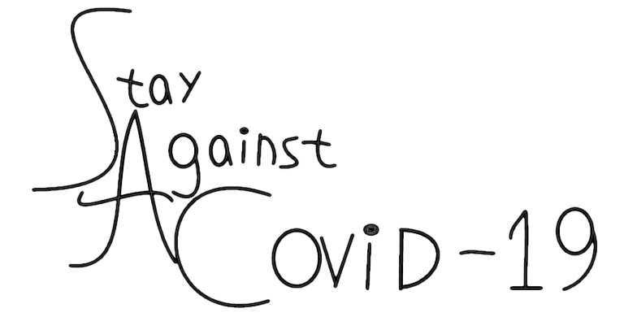

COVID-19
Сервисы
Карта
Советы
тест

Добро пожаловать на sac19
На сайте вы можете узнать больше о коронавирусе , быстро и удобно перейти на нужный вым онлайн сервис , посмотреть чем можнон заняться на карантине , и пройти тест на проверку знаний о коронавирусе